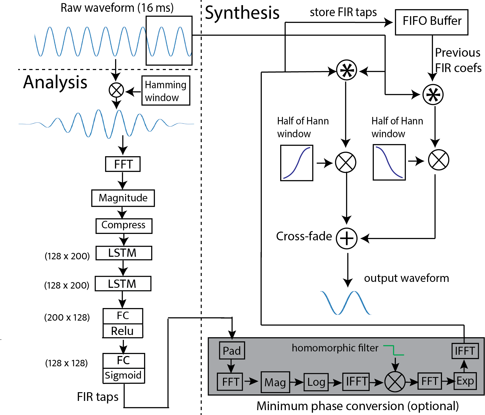

|Paper|
Artem Dementyev, Chandan K. A. Reddy, Scott Wisdom, Navin Chatlani, John R. Hershey, Richard F. Lyon
Google
Low latency models are critical for real-time speech enhancement applications, such as hearing aids and hearables. However, the sub-millisecond latency space for resource-constrained hearables remains underexplored. We demonstrate speech enhancement using a computationally efficient minimum-phase FIR filter, enabling sample-by-sample processing to achieve mean algorithmic latency of 0.32 ms to 1.25 ms. With a single microphone, we observe a mean SI-SDRi of 4.1 dB. The approach shows generalization with a DNSMOS increase of 0.2 on unseen audio recordings. We use a lightweight LSTM-based model of 644k parameters to generate FIR taps. We benchmark that our system can run on low-power DSP with 388 MIPS and mean end-to-end latency of 3.35 ms. We provide a comparison with baseline low-latency spectral masking techniques. We hope this work will enable a better understanding of latency and can be used to improve the comfort and usability of hearables.
Below is Deep FIR signal processing diagram, divided into synthesis and analysis. A new FIR filter is estimated every hop.
The table below provides audio samples evaluated on the CHiME-2 WSJ0 test set. The minimum phase Deep FIR filter has a mean algorithmic latency of 0.38 ms, which can potentially allow for 1.6 ms end-to-end latency on hardware. Notice that the proposed Deep FIR approach achieves comparable audio quality and more efficient computation in the very low latency range compared to the long short time window (LSTW) approach.
| Example -3dB SNR | Example +3 dB SNR | Example +9 dB SNR | |
| Noisy Mixture | |||
| LSTW (0.5 ms alg. latency) | |||
| Proposed: Deep FIR Minimum phase (0.38 ms alg. latency) |
|||
| Ground-Truth Reference | |||